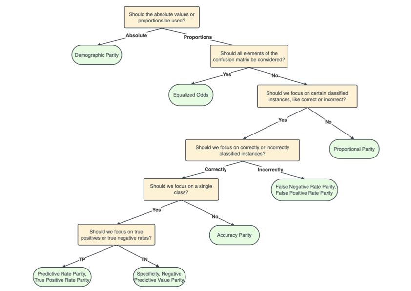
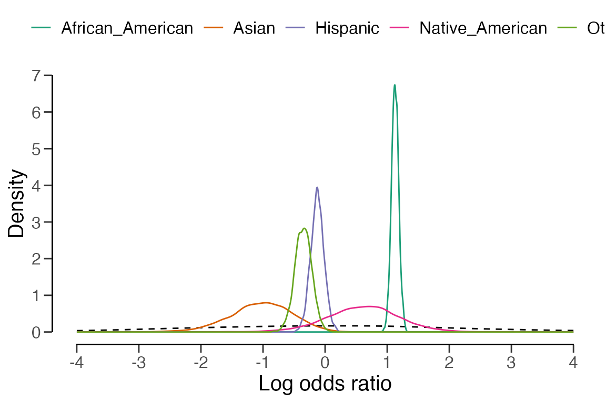

Welcome to the ‘Algorithmic fairness’ vignette of the
jfa package. In this vignette you can find a detailed
example of how you can use the model_fairness() function
provided by the package.
model_fairness()
The model_fairness() function provides a method to
assess fairness in algorithmic decision-making systems by computing
various model-agnostic metrics based on the observed and predicted
labels in a data set. Calculated metrics include demographic parity,
proportional parity, predictive rate parity, accuracy parity, false
negative rate parity, false positive rate parity, true positive rate
parity, negative predicted value parity, and specificity parity.
Note that, in an audit context, not all fairness measures are equally appropriate in all situations. The decision tree below aids with choosing which measure is best for the situation at hand (Büyük, 2023).

Example:
To illustrate how to use the model_fairness() function,
we will use a well-known data set called COMPAS. The COMPAS
(Correctional Offender Management Profiling for Alternative Sanctions)
software is is a case management and decision support tool used by some
U.S. courts to assess the likelihood of a defendant becoming a
recidivist (repeated offender).
The compas data is included in the package and contains
predictions of the COMPAS software for several cases. The data can be
loaded with data("compas") and contains for each defendant,
whether the defendant did commit a crime within two years after the
court case (TwoYrRecidivism), some personal characteristics
like gender and ethnicity, and whether the software predicted the
defendant to be a recidivist (Predicted).
## TwoYrRecidivism AgeAboveFoutryFive AgeBelowTwentyFive Gender Misdemeanor
## 4 no no no Male yes
## 5 yes no no Male no
## 7 no no no Female yes
## 11 no no no Male no
## 14 no no no Male yes
## 24 no no no Male yes
## Ethnicity Predicted
## 4 Other no
## 5 Caucasian yes
## 7 Caucasian no
## 11 African_American no
## 14 Hispanic no
## 24 Other noWe will investigate whether the algorithm is fair with respect to the
sensitive attribute Ethnicity. Considering the context, a
positive prediction means that a defendant is classified as a
reoffender, and a negative prediction means that a defendant is
classified as a non-reoffender. The fairness metrics offer information
on whether there are any disparities in the algorithm’s predictions
across different ethnic groups. By calculating and reviewing these
metrics, we can get an indication of whether the algorithm exhibits any
discriminatory behavior towards specific ethnic groups. If substantial
disparities exist, we may need to investigate further and potentially
modify the algorithm to ensure fairness in its predictions.
Before starting, let’s briefly explain the foundation of all fairness
metrics: the confusion matrix. This matrix presents observed versus
predicted labels, shedding light on the algorithm’s prediction mistakes.
Comprising the confusion matrix are the true positives (TP), false
positives (FP), true negatives (TN), and false negatives (FN). To
illustrate, the confusion matrix pertaining to the
African American group is displayed below. For example,
there are 629 people in this group that are incorrectly predicted to be
a reoffender, which represents a false positive in the confusion
matrix.
Predicted = no
|
Predicted = yes
|
|
|---|---|---|
TwoYrRecidivism = no
|
885 (TN) |
629 (FP) |
TwoYrRecidivism = yes
|
411 (FN) |
1250 (TP) |
Let’s interpret the fairness metrics for the African American, Asian, and Hispanic groups in comparison to the reference group (Caucasian) one by one.
\[DP = TP + FP\]
model_fairness(
data = compas,
sensitive = "Ethnicity",
target = "TwoYrRecidivism",
predictions = "Predicted",
reference = "Caucasian",
positive = "yes",
metric = "dp"
)##
## Classical Algorithmic Fairness Test
##
## data: compas
## metric: demographic parity, reference group: Caucasian, positive class: yes
##
## Sample estimates (parity ratio):
## African_American: 2.7961
## Asian: 0.0059524
## Hispanic: 0.22173
## Native_American: 0.0074405
## Other: 0.12649\[PP = \frac{TP + FP}{TP + FP + TN + FN}\]
model_fairness(
data = compas,
sensitive = "Ethnicity",
target = "TwoYrRecidivism",
predictions = "Predicted",
reference = "Caucasian",
positive = "yes",
metric = "pp"
)##
## Classical Algorithmic Fairness Test
##
## data: compas
## metric: proportional parity, reference group: Caucasian, positive class: yes
## alternative hypothesis: true odds ratio is not equal to 1
##
## Sample estimates (parity ratio):
## African_American: 1.8521 [1.7978, 1.9058], p-value = < 2.22e-16
## Asian: 0.4038 [0.1136, 0.93363], p-value = 0.030318
## Hispanic: 0.91609 [0.79339, 1.0464], p-value = 0.26386
## Native_American: 1.4225 [0.52415, 2.3978], p-value = 0.3444
## Other: 0.77552 [0.63533, 0.92953], p-value = 0.0080834For this (and all of the following) metrics, Bayesian inference is
supported and provides credible intervals and Bayes factors. Like in the
other functions in jfa, performing a Bayesian analysis
using a default prior can be achieved by setting
prior = TRUE. The resulting Bayes factors in favor of
rejection of the null hypothesis (\(BF_{10}\)) are shown in the output
below.
model_fairness(
data = compas,
sensitive = "Ethnicity",
target = "TwoYrRecidivism",
predictions = "Predicted",
reference = "Caucasian",
positive = "yes",
metric = "pp",
prior = TRUE
)##
## Bayesian Algorithmic Fairness Test
##
## data: compas
## metric: proportional parity, reference group: Caucasian, positive class: yes
## alternative hypothesis: true odds ratio is not equal to 1
##
## Sample estimates (parity ratio):
## African_American: 1.8585 [1.8155, 1.9213], BF₁₀ = 4.1528e+81
## Asian: 0.45845 [0.17573, 0.9353], BF₁₀ = 0.26796
## Hispanic: 0.92196 [0.80481, 1.0528], BF₁₀ = 0.10615
## Native_American: 1.4866 [0.67209, 2.3223], BF₁₀ = 0.018438
## Other: 0.80348 [0.65077, 0.93824], BF₁₀ = 1.815This is probably also a good time to show the summary()
and plot() functions associated with the
model_fairness() function. Let’s examine the frequentist
function call again, but instead of printing the output to the console,
this time we store the output in x and run the
summary() and plot() functions on this
object.
x <- model_fairness(
data = compas,
sensitive = "Ethnicity",
target = "TwoYrRecidivism",
predictions = "Predicted",
reference = "Caucasian",
positive = "yes",
metric = "pp"
)
summary(x)##
## Classical Algorithmic Fairness Test Summary
##
## Fairness metric: Proportional parity (Disparate impact)
## Model type: Binary classification
## Reference group: Caucasian
## Positive class: yes
##
## Model performance:
## Support Accuracy Precision Recall F1 score
## Caucasian 2103 0.6585830 0.5773810 0.4720195 0.5194110
## African_American 3175 0.6724409 0.6652475 0.7525587 0.7062147
## Asian 31 0.7419355 0.5000000 0.2500000 0.3333333
## Hispanic 509 0.6817289 0.5906040 0.4656085 0.5207101
## Native_American 11 0.6363636 0.6000000 0.6000000 0.6000000
## Other 343 0.6938776 0.6117647 0.4193548 0.4976077
##
## Sample estimates:
## Proportional parity Parity ratio
## Caucasian (R) 0.31954 [0.29964, 0.33995] -
## African_American 0.59181 [0.57448, 0.60897] 1.8521 [1.7978, 1.9058]
## Asian 0.12903 [0.036302, 0.29834] 0.4038 [0.1136, 0.93363]
## Hispanic 0.29273 [0.25352, 0.33437] 0.91609 [0.79339, 1.0464]
## Native_American 0.45455 [0.16749, 0.76621] 1.4225 [0.52415, 2.3978]
## Other 0.24781 [0.20302, 0.29702] 0.77552 [0.63533, 0.92953]
## Odds ratio p-value
## Caucasian (R) - -
## African_American 3.0866 [2.7453, 3.4726] < 2.22e-16
## Asian 0.31561 [0.079942, 0.91095] 0.030318
## Hispanic 0.88138 [0.70792, 1.0939] 0.26386
## Native_American 1.7739 [0.42669, 7.0041] 0.3444
## Other 0.70166 [0.53338, 0.91633] 0.0080834
plot(x)
\[PRP = \frac{TP}{TP + FP}\]
model_fairness(
data = compas,
sensitive = "Ethnicity",
target = "TwoYrRecidivism",
predictions = "Predicted",
reference = "Caucasian",
positive = "yes",
metric = "prp"
)##
## Classical Algorithmic Fairness Test
##
## data: compas
## metric: predictive rate parity, reference group: Caucasian, positive class: yes
## alternative hypothesis: true odds ratio is not equal to 1
##
## Sample estimates (parity ratio):
## African_American: 1.1522 [1.1143, 1.1891], p-value = 5.4523e-05
## Asian: 0.86598 [0.11706, 1.6149], p-value = 1
## Hispanic: 1.0229 [0.87836, 1.1611], p-value = 0.78393
## Native_American: 1.0392 [0.25396, 1.6406], p-value = 1
## Other: 1.0596 [0.86578, 1.2394], p-value = 0.5621\[AP = \frac{TP + TN}{TP + FP + TN + FN}\]
model_fairness(
data = compas,
sensitive = "Ethnicity",
target = "TwoYrRecidivism",
predictions = "Predicted",
reference = "Caucasian",
positive = "yes",
metric = "ap"
)##
## Classical Algorithmic Fairness Test
##
## data: compas
## metric: accuracy parity, reference group: Caucasian, positive class: yes
## alternative hypothesis: true odds ratio is not equal to 1
##
## Sample estimates (parity ratio):
## African_American: 1.021 [0.99578, 1.0458], p-value = 0.29669
## Asian: 1.1266 [0.841, 1.3384], p-value = 0.44521
## Hispanic: 1.0351 [0.97074, 1.0963], p-value = 0.34691
## Native_American: 0.96626 [0.46753, 1.3525], p-value = 1
## Other: 1.0536 [0.975, 1.127], p-value = 0.21778\[FNRP = \frac{FN}{TP + FN}\]
model_fairness(
data = compas,
sensitive = "Ethnicity",
target = "TwoYrRecidivism",
predictions = "Predicted",
reference = "Caucasian",
positive = "yes",
metric = "fnrp"
)##
## Classical Algorithmic Fairness Test
##
## data: compas
## metric: false negative rate parity, reference group: Caucasian, positive class: yes
## alternative hypothesis: true odds ratio is not equal to 1
##
## Sample estimates (parity ratio):
## African_American: 0.46866 [0.42965, 0.50936], p-value = < 2.22e-16
## Asian: 1.4205 [0.66128, 1.8337], p-value = 0.29386
## Hispanic: 1.0121 [0.87234, 1.1499], p-value = 0.93562
## Native_American: 0.7576 [0.099899, 1.6163], p-value = 0.67157
## Other: 1.0997 [0.92563, 1.2664], p-value = 0.28911\[FPRP = \frac{FP}{TN + FP}\]
model_fairness(
data = compas,
sensitive = "Ethnicity",
target = "TwoYrRecidivism",
predictions = "Predicted",
reference = "Caucasian",
positive = "yes",
metric = "fprp"
)##
## Classical Algorithmic Fairness Test
##
## data: compas
## metric: false positive rate parity, reference group: Caucasian, positive class: yes
## alternative hypothesis: true odds ratio is not equal to 1
##
## Sample estimates (parity ratio):
## African_American: 1.8739 [1.7613, 1.988], p-value = < 2.22e-16
## Asian: 0.39222 [0.048308, 1.2647], p-value = 0.19944
## Hispanic: 0.85983 [0.67237, 1.0736], p-value = 0.25424
## Native_American: 1.5035 [0.19518, 3.5057], p-value = 0.61986
## Other: 0.67967 [0.47835, 0.92493], p-value = 0.019574\[TPRP = \frac{TP}{TP + FN}\]
model_fairness(
data = compas,
sensitive = "Ethnicity",
target = "TwoYrRecidivism",
predictions = "Predicted",
reference = "Caucasian",
positive = "yes",
metric = "tprp"
)##
## Classical Algorithmic Fairness Test
##
## data: compas
## metric: Ttrue positive rate parity, reference group: Caucasian, positive class: yes
## alternative hypothesis: true odds ratio is not equal to 1
##
## Sample estimates (parity ratio):
## African_American: 1.5943 [1.5488, 1.638], p-value = < 2.22e-16
## Asian: 0.52964 [0.067485, 1.3789], p-value = 0.29386
## Hispanic: 0.98642 [0.83236, 1.1428], p-value = 0.93562
## Native_American: 1.2711 [0.31065, 2.0068], p-value = 0.67157
## Other: 0.88843 [0.70202, 1.0832], p-value = 0.28911\[NPVP = \frac{TN}{TN + FN}\]
model_fairness(
data = compas,
sensitive = "Ethnicity",
target = "TwoYrRecidivism",
predictions = "Predicted",
reference = "Caucasian",
positive = "yes",
metric = "npvp"
)##
## Classical Algorithmic Fairness Test
##
## data: compas
## metric: negative predictive value parity, reference group: Caucasian, positive class: yes
## alternative hypothesis: true odds ratio is not equal to 1
##
## Sample estimates (parity ratio):
## African_American: 0.98013 [0.94264, 1.0164], p-value = 0.45551
## Asian: 1.1163 [0.82877, 1.3116], p-value = 0.52546
## Hispanic: 1.0326 [0.96161, 1.0984], p-value = 0.43956
## Native_American: 0.95687 [0.31975, 1.3732], p-value = 1
## Other: 1.0348 [0.95007, 1.112], p-value = 0.46084\[SP = \frac{TN}{TN + FP}\]
model_fairness(
data = compas,
sensitive = "Ethnicity",
target = "TwoYrRecidivism",
predictions = "Predicted",
reference = "Caucasian",
positive = "yes",
metric = "sp"
)##
## Classical Algorithmic Fairness Test
##
## data: compas
## metric: specificity parity, reference group: Caucasian, positive class: yes
## alternative hypothesis: true odds ratio is not equal to 1
##
## Sample estimates (parity ratio):
## African_American: 0.75105 [0.71855, 0.78314], p-value = < 2.22e-16
## Asian: 1.1731 [0.92461, 1.2711], p-value = 0.19944
## Hispanic: 1.0399 [0.97904, 1.0933], p-value = 0.25424
## Native_American: 0.85657 [0.28624, 1.2293], p-value = 0.61986
## Other: 1.0912 [1.0214, 1.1486], p-value = 0.019574